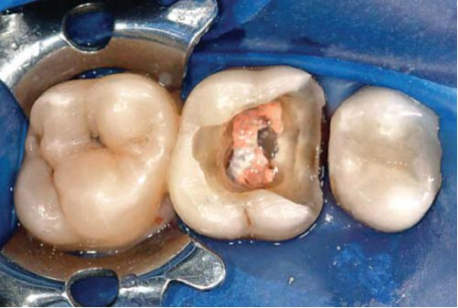
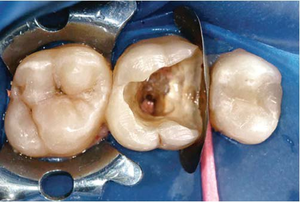
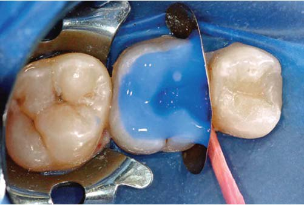
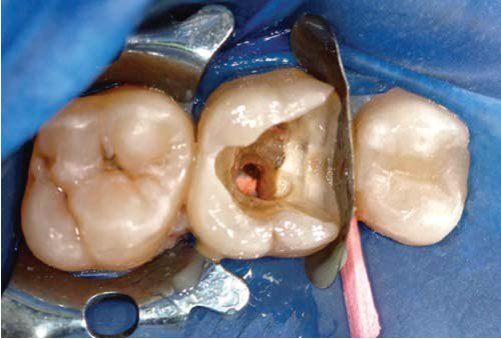
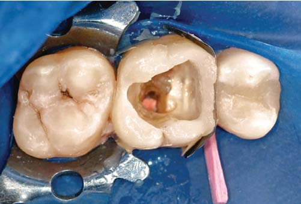
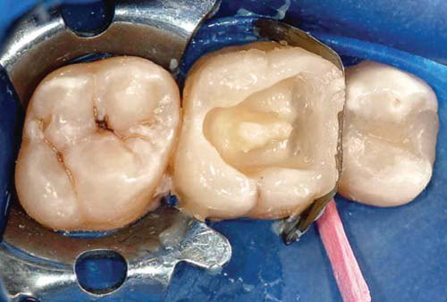
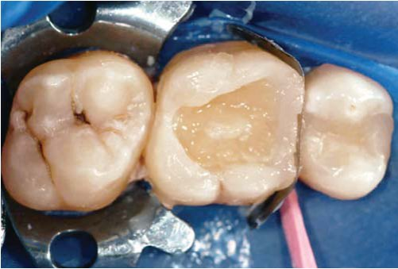
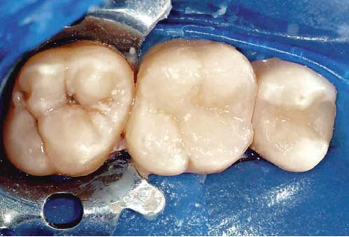
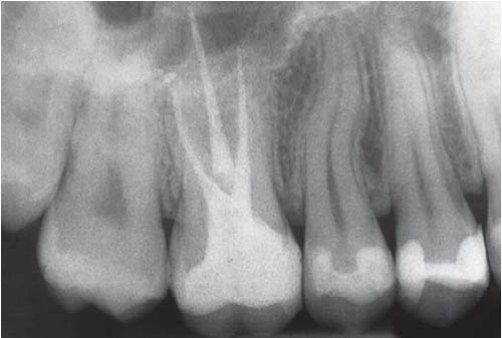
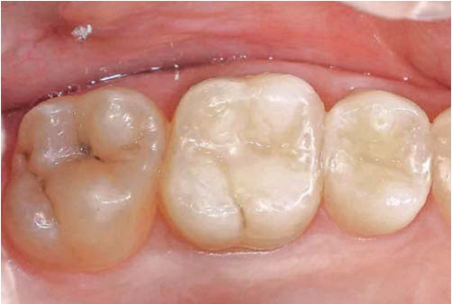

Наука · журнал «ДентАрт» 2014 №1 (74)
Реконструкція девітальних зубів з використанням композитів, посилених волоконними конструкціями
RECONSTRUCTION OF NONVITAL TEETH USING DIRECT FIBER-REINFORCED COMPOSITE RESIN
У дослідженні клінічних особливостей прямих реставрацій класу II в девітальних зубах з використанням композитів, посилених волоконними конструкціями, були задіяні тридцять пацієнтів, старших 18 років, з реставрацією 35 молярів. Критеріями вибору були: реставрації, що включають від двох до чотирьох поверхонь, заміна композитних і амальгамних реставрацій або невідновлені зуби з ураженням, що сягає пульпи, зуби з гомогенною обтурацією кореневих каналів, що закінчується на рівні 0-2 мм від рентгенологічного апекса. Зуби з власною товщиною стінок, меншою 1 мм, або повною відсутністю клінічної коронки не бралися.
Зуби відновлювалися з використанням комбінації Ультра Етч 35% фосфорної кислоти, адгезивної системи ПіКю 1 і мікрогібридного композиту Віталесценс. Спочатку відновлювався поверхневий шар емалі, потім просочений смолою шматочок поліетиленової волоконної стрічки (Ріббонд Тріаксіал) покривався рідким композитом В1 Перма-Фло і закладався у підготовлений канал, після чого провадилися його укладання та фотополімеризація, а наприкінці — побудова дентинної і емалевої оклюзійної поверхні.
Усі 35 реставрацій спостерігалися протягом 6 місяців і 1 року двома незалежними дослідниками з використанням модифікованих критеріїв Служби Суспільної Охорони Здоров'я США.
Результати: невдач не виявлено. До лікування 26 із 35 зубів (74%) мали рентгенологічно діагностований апікальний періодонтит. Через рік після лікування слідів апікального періодонтиту виявлено не було, рентгенологічне дослідження не показало ні розширень періодонтальної щілини, ні періапікальних розріджень.
Висновки. Прямі композитні реставрації, посилені волоконними конструкціями, показали чудові результати протягом 1 року.
Невідновлені девітальні зуби є пошкодженими структурно, і це одне з найбільших завдань для клініциста. Понад 15 років тому реставрація ендодонтично лікованих зубів автоматично асоціювалася з комбінацією попередньо або індивідуально виготовлених металевих штифтів/вкладок і повних коронок. Протягом років було запропоновано безліч матеріалів і дизайнів штифтів, приносили в жертву велику кількість твердих тканин коронки і кореня, що збільшувало ризик перфорації кореня або фрактури.12 Проте недавня мотивація захистити і посилити тверді тканини структур зуба, що залишилися, навіяна властивостями сучасних адгезивних систем,22 сприяла перегляду клініцистами догмату традиційної реставраційної стоматології. Пошук альтернативних методів відновлення девітальних зубів став дуже популярним. Адгезивні реставрації дають можливість лікарям-стоматологам провадити мінімально інвазивне препарування, тим самим зберігаючи тверді тканини зуба. Цікаво те, що тривале поліпшення фізичних і механічних властивостей композитів дозволило клініцистам повністю відмовитися від амальгами.4 Більше того, вимоги пацієнтів до естетики реставрації та їхнє бажання зберегти тверді тканини зуба, що залишилися, значно зросли. Останнім часом стоматологи розширили показання для прямих композитних реставрацій.6,7,16 Надалі на цю ситуацію могли вплинути матеріальні можливості пацієнтів, що не дозволяють мати ідеальну непряму реставрацію великого обсягу в бічній і передній ділянках. Як наслідок, клінічні показання для прямих композитних реставрацій у передніх і бічних зубах безперервно розширюються.
Стандартні композитні штифти, посилені скловолокном і подібні за кольором до зуба, які були запропоновані в 1990-х, мають кілька переваг над традиційними металевими штифтами.20 Вони естетичні і мають адгезію до тканин зуба, подібний до дентину модуль пружності, але все ще вимагають препарування дентину для установки в каналі.
Сьогодні запропоновані альтернативні системи для посилення композитів з метою збільшити міцність реставрацій і їх стійкість до ушкоджень.23 Популярність набирають системи з використанням поліетилену з надвисокою молекулярною масою. Успіх полягає у використанні просочуваних волокон для побудови ендоштифтів і кукс, а також в їх адаптації до стінок каналу без додаткового його розширення. Ці плетені волокна мають модуль еластичності, схожий з таким дентину, що спрямовано на створення моноблоку дентин-штифт-кукса, який дозволяє краще розподілити навантаження вздовж кореня.19 Нещодавно на ринку з'явилися поліпшені волоконні системи з використанням поліетилену з надвисокою молекулярною масою (Ріббонд Тріаксіал). Вони мають вищі характеристики, ніж традиційні поліетилени, завдяки односпрямованому розташуванню волокон з плетеними нитками, вміщеними між ними.
Композити, посилені волокном, можуть виготовлятися в різних конфігураціях. Різні типи посилення можуть складатися з односпрямованих волокон, плетених біаксіальних і триаксіальних поліетиленових волокон, а також перевитих тканих поліетиленових волокон. Односпрямована конфігурація забезпечує значне збільшення міцності і жорсткості вздовж волокон, але має слабкі поперечні властивості, в результаті чого з'являється тенденція до поздовжнього разволокнення і передчасної поломки. Волокна можуть з'являтися з композиту під час маніпуляцій. Двоспрямоване переплетення орієнтації волокон дозволяє також пошкоджуватися під час розрізання та розширення в композиті при адаптації до поверхні зуба. Стрічкові волокна розширюються і відокремлюються одне від одного, що призводить до ослаблення цілісності архітектури.
У тривимірно переплетеній архітектурі волокна розташовані у трьох напрямках: осьові нитки і дві переплетені нитки, орієнтовані на заздалегідь визначені кути (приблизно 30 і 45 градусів). Карбарі і Вонг13 довели, що при використанні тривимірного плетіння зростають характеристики гнучкості композиту, що забезпечує високий рівень опору поломці шляхом зупинення та ізоляції тріщин. Крім того, вони встановили, що максимальне еластичне навантаження дентину на 60% вище, ніж непідсиленого композиту, також композит з таким самим плетінням показав 70% збільшення максимального рівня навантаження. Поліетилени з надвисокою молекулярною масою у тривимірному плетінні можна розрізати і розширювати в стоматологічних композитах без зміни їх архітектури, волоконні нитки зберігають свою орієнтацію і не відокремлюються одна від одної при щільній адаптації до тканин зуба.
Мета цього дослідження — визначити клінічну поведінку прямих реставрацій з волоконним посиленням при використанні мікрогібридного композиту для реконструкції зруйнованих бічних ендодонтично лікованих зубів. Ми припустили, що 100% ретенцію композиту можна очікувати при повторному огляді через 6 місяців.
Матеріали і методи
Критерії вибору
Тридцять пацієнтів, старші 18 років, були задіяні у пілотному клінічному дослідженні для того, щоб відновити 35 ендодонтично лікованих бічних зубів.
До дослідження допускалися зуби, які відповідали таким критеріям:
- МО, ДО або МОД реставрації класу II (в реставрації задіяно від 2 до 4 поверхонь);
- необхідність заміни амальгами або композитної реставрації в разі вторинного процесу, фрактури пломбувального матеріалу або структур зуба, пов'язані з періапікальними ушкодженнями, або невідновлені зуби з каріозним ураженням, що сягає пульпи;
- зуби з відсутністю одного або двох горбків;
- зуби, що перебувають в оклюзії і мають проксимальні контакти із сусідніми зубами;
- моляри.
Пацієнти з оклюзійною парафункцією до дослідження не допускалися. Пацієнти, в зубах яких відзначалися внутрішні дисколорити (тетрациклінові плями, флюороз), курці, вагітні або жінки-годувальниці були виключені з дослідження. Зуби з товщиною стінки порожнини менше 1 мм або з повною відсутністю клінічної коронки були також виключені. Більше того, пацієнти, які не мали можливості з'явитися на повторний огляд, і пацієнти, що мають гінгівальной індекс понад 1, також були виключені з дослідження.
У дослідженні були задіяні лише ендодонтично ліковані зуби (див. нижче опис лікування), які мали гомогенну обтурацію кореневих каналів, що закінчується на рівні 0-2 мм від рентгенологічного апекса. І навпаки, девітальні зуби з обтурацією кореневих каналів, що закінчується на рівні понад 2 мм від рентгенологічного апекса, не допускалися.
До початку дослідження було отримано інформовану згоду. За 2 тижні до початку дослідження всім пацієнтам проведено професійну гігієну. Зуби відновлювалися не пізніше, ніж через 2 тижні після завершення ендодонтичного лікування.
Ендодонтичне лікування
При інструментальній обробці застосовувалася техніка краун-даун, між кожним розміром інструмента використовувався 5,25% розчин гіпохлориту натрію. Підготовані канали оброблялися силером на основі евгенолу (Пульп канал силер, Керр Сайброн). Обтурація виконувалася шляхом вертикальної конденсації розігрітої гутаперчі (Систем Бі, Керр Сайброн) до повного пломбування кореневих каналів. Потім встановлювалися тимчасові реставрації з використанням провізорного реставраційного матеріалу (Кевіт-В, 3М ЕСПЕ).
Процедура реставрації
Зуби відновлювалися не пізніше, ніж через 2 тижні після завершення ендодонтичного лікування. Після накладення рабердаму порожнину препарували в дуже консервативній техніці за допомогою бору №245 (ІСО №008) (Шофу дентал), видалялися тільки каріозні маси та/або існуючі реставрації, згладжування гострих кутів робилося борами № 2 (ІСО №10) та №4 (ІСО №14) (Шофу дентал). На жувальній і язичній поверхні скоси не виконувалися (фото 1). З каналів видаляли від 3 до 4 мм гутаперчі (дистальні канали в нижніх і піднебінних каналах у верхніх молярах) для оголення дентину і збільшення макроретенції для емалевих/дентинних адгезивних систем. Для інтерпроксимальної адаптації була використана секційна матриця (Компози-тайт, ДжіДіЕс) разом з дерев'яним клином (фото 2). Емаль і дентин протравлювали протягом 30 с з використанням 35% фосфорної кислоти (Ультра Етч, Ультрадент) (фото 3), після цього кислота обережно видалялася з порожнини струменем води протягом 30 с для отримання вологої поверхні. Потім у порожнину вносилася адгезивна система п'ятого покоління на основі етанолу із 40% наповненістю, злегка роздувалася повітрям для випаровування розчинника і фотополімеризувалася протягом 20 с світловим потоком потужністю 800 мВ/см2 з оклюзійної поверхні, використовуючи ЛЕД лампу (УльтраЛюм В, Ультрадент) (фото 4).




З метою уникнення формування мікротріщин на вестибулярній/піднебінній стінці, що залишилася, автори використали описану раніше техніку полімеризації, засновану на пульсуючій і прогресуючій полімеризації.5,7
Для побудови реставрацій також була обрана особлива техніка внесення композиту. Віталесценс — реставраційний композит (Ультрадент) став матеріалом вибору для відновлення девітальних зубів завдяки великій кількості емалевих відтінків і чудовим механічним властивостям.7 Секційна матриця була адаптована до сусіднього зуба. Побудова зуба почалася з клиноподібних шарів товщиною 2 мм, спрямованих від ясен до оклюзійної поверхні, з матеріалу бурштинового (ПіЕй) і прозорого (ПіЕс) емалевих відтінків для реконструкції проксимальної і піднебінної поверхонь. Без полімеризації композит конденсували і адаптували до країв порожнини та секційної матриці, кожна порція піддавалася пульсуючій полімеризації протягом 3 с з потужністю 800 мВ/см2 для запобігання мікротріщинам. Після цього провадилася повна полімеризація проксимальної і піднебінної/вестибулярної стінок, побудованих з відтінків ПіЕй і ПіЕс, потужність світлового потоку становила 800 мВ/см2, тривалість — 20 с. Поверхнева емалева основа реставрації виконана таким чином, щоб стати орієнтиром для побудови правильної оклюзійної анатомії (фото 5). Поліетилен із надважкою молекулярною масою тривимірного плетіння (Ріббонд) був вибраний і використовувався згідно з інструкціями виробника. Тривимірне волокно було змочене ненаповненою смолою (Пермасіл, Ультрадент), надлишки видалені, після чого волокно повністю покрите текучим композитом В1 (Пермафло, Ультрадент) і поміщене в центральну зону реставрації. Поліетиленове волокно складене удвічі, і кожен його кінець поміщено в кореневий канал за допомогою тонкої гладилки для композиту6 (фото 6). Далі волоконно-композитний комплекс і рідкий композит полімеризувалися протягом 120 с з потужністю 800 мВ/см2, щоб упевнитися в повній полімеризації волоконно-композитного комплексу в каналі. Потім відновлювався дентин на вестибулярній, піднебінній і проксимальній стінках шляхом внесення клиноподібних порцій товщиною 2 мм з композиту відтінку А3 на кожну емалеву стінку, уникаючи контакту зі свіжими порціями. Наступні порції матеріалу з відтінків А4 і А3,5 було внесено в центральну зону реставрації навколо волоконно-композитної системи, щоб створити більш насичений колір, який раніше мав неприродний вигляд через текучий композит В1. Таким чином були створені штифт і кукса. Кожна порція дентину полімеризувалася прогресуючою «наскрізною» технікою (40 с з потужністю 800 мВ/см2 через вестибулярну і язичну поверхні — замість традиційної техніки безперервної іррадіації протягом 20 с з потужністю 800 мВ/см2 через оклюзійну поверхню). На цьому етапі відбувалася побудова середньої третини дентину з використанням комбінації відтінків композиту А1 і А2 (фото 7). Шари емалі відтінків ПіЕф або ПіЕн наносилися на фінальну форму оклюзійної поверхні згідно з послідовною технікою побудови горбків (фото 8). Фінальний шар полімеризувався протягом 1 с світловим потоком потужністю 800 мВ/см2 у пульсуючій техніці. Для пом'якшення стресу було зроблено перерву 3 хв, після чого видалено матрицю і клин, знято рабердам, перевірено оклюзію і виконано фінішну обробку реставрації з використанням фінішного набору для композитів Ультрадент. Фінішний цикл полімеризації проводився шляхом просвічування відновленого зуба через вестибулярну, піднебінну та оклюзійну поверхні протягом 20 с з кожного боку при потужності 800 мВ/см2. Фінальне полірування проводилося з використанням полірувальних чашок і конусів Джиффі (Фінале, Ультрадент) (фото 9).





Процедури спостереження
У дослідженні брали участь три експерти: перший відновлював зуби, потім реставрації перевіряли два інші з попередньо узгодженою відповідністю 85%. Розбіжності вирішувалися шляхом досягнення консенсусу. Рентгенограми періапікальних тканин робилися на початку дослідження, після завершення реставрації кореневого каналу і через 1 рік на повторному огляді (фото 10). Для забезпечення паралельної техніки використовувався позиціонер Супербайт Керр-Хаве (Керр-Хаве) і плівка Кодак Ультра Спід (Кодак).
Реставрації оцінювалися після закінчення шести місяців і одного року за допомогою модифікованих критеріїв Служби Суспільної Охорони Здоров'я США, критерії були підібрані для перевірки прямих реставрацій, посилених волокном, включаючи штифт, кореневий канал і фактори, пов'язані з періапікальними тканинами (табл.1). Фотографування робилося при кожному огляді (фото 11).


| Показник | Альфа | Браво | Чарлі | Дельта |
|---|---|---|---|---|
| Текстура поверхні | Не ушкоджена | Шорстка | — | — |
| Анатомічна форма | Не ушкоджена | Поверхневий убуток матеріалу (відколи, тріщини) | Глибокі ушкодження матеріалу (відколи, тріщини) | Повна або часткова відсутність основного об’єму |
| Крайове прилягання (емаль) | Не ушкоджене | Виступаюча сходинка, що видаляється поліруванням | Локалізована неглибока сходинка, що не видаляється | Глибока сходинка, що не видаляється, майже по всьому краю |
| Крайове забарвлювання (емаль) | Відсутнє | Легке забарвлювання, що видаляється поліруванням | Забарвлювання локалізоване, не видаляється | Сильне забарвлювання майже по всьому краю, не видаляється |
| Вторинний карієс | Немає | Наявність карієсу | — | — |
| Запалення ясен | Немає | Легке | Помірне | Тяжке |
| Стабільність кольору реставрації | Без змін | Зміна кольору порівняно з первинним станом | — | — |
| Штифт | Відсутність зазору між штифтом і гутаперчею або штифтом і стінками порожнини | Зазор між штифтом і гутаперчею або штифтом і стінками порожнини | Зміщення чи від'єднання штифта | Поломка штифта |
| Корінь | Відсутність клінічних і рентгенологічних ознак перелому кореня | Перелом кореня з убутком кістки уздовж поверхні зуба і біль при накусуванні | — | — |
| Періапікальний статус | Нормальний: гарний стан періапікальних тканин | Розширення періодонтальної щілини, що не перевищує її ширину вдвічі | Рентгенологічне розрідження тканин навколо верхівки, з розширенням періодонтальної щілини більш ніж удвічі | – |
Результати
Усі пацієнти з'явилися для перевірки композитної реставрації через 1 рік. Невдач помічено не було, для всіх параметрів записано альфа результати, як для коронок, так і для коренів. Перед початком лікування 26 із 35 зубів (74%) мали ознаки періапікального періодонтиту, що підтверджувалося рентгенографічно. На повторному огляді через 1 рік ознак періапікальних уражень виявлено не було, рентгенографічне дослідження не показало ні розширень періодонтальної щілини, ні періапікального розрідження.
Обговорення
Металеві штифти не посилюють ендодонтично ліковані зуби, і їх використання спрямоване лише на ретенцію коронкової реставрації.25 Препарування під штифт може призвести до руйнування твердих структур зуба, а також до ризику перфорації кореня.
Прямі поліетиленові тривимірні волоконні штифти можуть стати гарною альтернативою традиційним металевим і стандартним волоконним штифтам, бо поліетиленові волоконні штифти мають низку переваг над традиційними стандартними штифтами. Вони використовуються як прямі естетичні індивідуальні штифти, адаптуються до стінок кореневого каналу, не вимагаючи додаткового розширення після ендодонтичного лікування як у звичайних, так і в широких каналах.
Цікавий той факт, що в період спостереження не було помічено рентгенологічного зміщення або відділення штифта. Цей короткотерміновий успіх може бути пов'язаний з технікою адгезивного цементування і тривимірною структурою волокна поліетилену. Деталі вибору окремого протоколу цементування публікувалися раніше,6 комбінація видимого фотополімерного ненаповненого композиту з текучим композитом для бондингу тканинних волокон до структур зуба і композитної культі — гідна альтернатива традиційним технікам цементування. Стандартні волоконні штифти складаються з армуючих волокон, поміщених у щільну полімерну матрицю.17 Мономери композитного фіксуючого цементу не можуть проникати у волокна, сила зв'язування залежить лише від мікромеханічного з'єднання між поверхнею стандартного штифта і фіксуючим агентом. За вільнорадикальної полімеризації текучого композиту і тканинних волокон поліетилену з надвисокою молекулярною масою, поміщених у композит, відбувається їх зв'язування, що можливе при застосуванні поліетиленових штифтів.
Можна стверджувати, що повна полімеризація волоконно-композитного комплексу в каналі може бути скомпрометована при використанні техніки полімеризації, прийнятої в цьому дослідженні. Проте з каналу видаляються лише від 3 до 4 мм гутаперчі. Полімеризаційний цикл 120 с потужністю 800 мВ/см2 провадився для забезпечення повної полімеризації, а також подальша енергія світла впливала під час побудови кукси і фінішної полімеризації. Понад те, досягненню цієї мети можуть сприяти підвищена фоточутливість композитів і ЛЕД технологія полімеризації.24 Ліндберг і співавтори18 порівнювали глибину полімеризації за допомогою кварц-вольфрам-галогенової лампи і діодної лампи з різним часом експозиції і різною відстанню від кінчика світловода до композиту. Автори використовували 6 мм зразки композиту А3. Незважаючи на меншу потужність діодної лампи (Ультралюм 2), глибина полімеризації з експозицією 20 і 40 с на відстані 0,3 і 6 мм при використанні як діодної, так і галогенової лампи виявилася однаковою. Ці висновки були обґрунтовані тим фактом, що галогенова лампа дає світло широкого спектру, яке не поглинається камфорохіноном. Яп і Сог27 довели, що потужні діодні лампи нового покоління можуть полімеризувати композит з такою ж ефективністю, як і традиційні галогенові/діодні лампи, при цьому скорочуючи час полімеризації на 50%. Ернст і колеги8 порівнювали глибину полімеризації при застосуванні різних діодних і галогенових ламп. Були використані зразки композиту відтінку А3 товщиною від 1 до 5 мм, кінчик світловода розташовувався на відстані 7 мм від дна зразка композиту. Автори встановили, що діодні лампи здатні полімеризувати композит так само або навіть краще, ніж потужні галогенові лампи. Примітно, що у нашому дослідженні ми вибрали світліший відтінок композиту (В1) для цементування штифтів, посилених поліетиленовими волокнами в каналі. Ми також застосовували діодну лампу високої потужності, схожу на ті, які вивчали в інших лабораторних дослідженнях.8,18,27
У цьому дослідженні вивчалися постендодонтичні реконструкції. Це має першорядне значення для диференціації між апікальним періодонтитом внаслідок невдалого ендодонтичного лікування і внаслідок невдалого відновлення коронки за допомогою штифта. Під час дослідження консенсус досягався шляхом визначення першопричини періапікальних уражень. Апікальне розрідження пов'язане зі зміщенням або відділенням коронкової реставрації, однак ускладнення, пов'язані з ендодонтичним лікуванням при неповному апікальному лікуванні, бувають і за відсутності будь-яких зсувів або відділень штифта. Цікаво, що стан періапікальних тканин у депульпованих зубах прямо пов'язаний з якістю реставрації коронки. Доведено, що неадекватне лікування кореневих каналів і неякісні коронорадикулярні штифти мають зв'язок зі збільшенням апікального розрідження.14 Рей і Троп встановили, що якість реставрації коронки може мати набагато важливіше значення в періапікальному статусі, ніж якість ендодонтичного лікування. Тронстад і співробітники26 довели протилежне. Вони говорять про те, що оцінка стану періапікальних тканин пов'язана з оцінкою реставрацій, посилених волокном, які також впливають. Ми включили параметр періапікального лікування в стандартні критерії Служби Суспільної Охорони Здоров'я США.
Поліетиленові волоконні системи, просочені композитом, укладалися в підготовлені канали і використовувалися як системи штифтів. Зсув штифта або фрактура можуть посилити коронарні підтікання, тим самим впливаючи на періапікальний статус. Комбінацією належного ендодонтичного і реставраційного лікування пояснюється відсутність апікального розрідження в цьому дослідженні, згідно з попередніми клінічними спостереженнями.21,26 Варіабельність була зменшена шляхом вибору ендодонтичного лікування зубів з гомогенною обтурацією кореневого каналу, що закінчується на рівні 0-2 мм від рентгенологічного апекса. У цьому контексті успіх апікального лікування більш імовірний.
Комбінація клиновидних порцій композиту і волоконної системи на основі поліетилену з надвисокою молекулярною масою (Ріббонд Тріаксіал) має першорядну важливість у подальшому зниженні полімеризаційної усадки, кращій підтримці композиту, посиленні тканин зуба, які залишилися, і зменшенні загального обсягу композиту.1-3,13 Високий Сі-фактор може бути результатом послідовної побудови емалевого контуру реставрації. Сі-фактор визначається як співвідношення між приклеєними і неприклеєними поверхнями, підвищення цього значення призводить до зростання полімеризаційного стресу.9 У цьому контексті основоположним фактором є внесення клиновидних порцій композиту, що у результаті допомагає знизити Сі-фактор.
Поліетиленові волоконні штифти можуть сприяти ретенції композитних реставрацій. Подальші клінічні дослідження повинні порівняти прямі реставрації, посилені волокном, з прямими реставраціями без штифтів для визначення підвищення потенціалу ретенції і міцності, що досягаються при використанні волокон у пошкоджених девітальних зубах. Комбінований сприятливий ефект волоконного модуля і його внутрішньої архітектури (волокна розташовані в різних напрямках) дозволяє розподілити силу на більш широку зону і тим самим зменшити рівень стресу.3 Попередні лабораторні дослідження засвідчили, що використання поліетиленових волокон з надвисокою молекулярною масою спільно з текучим композитом підвищує стійкість депульпованих молярів до фрактур при МОД порожнинах.1, 2
Незважаючи на обмежений одним роком період спостереження, результати цього клінічного дослідження обнадіюють. Маргінальна інтеграція, анатомічна форма і текстура збереглися протягом періоду спостереження тривалістю один рік. Не було зафіксовано ні маргінальних забарвлювань, ні вторинного карієсу, ні сколів, ні розтріскування композиту. Цікаво те, що 28 з 35 зубів мають реставрації із залученням як мінімум одного горбика. Попередні лабораторні дослідження з відновлення горбиків композитом засвідчили, що поломка зуба/реставрації більш імовірна, ніж поломка самого композитного матеріалу.10,11 Ці висновки вказують на значне поліпшення фізичних і механічних властивостей композитних матеріалів за останнє десятиріччя.15
Жодне тривале або коротке дослідження не велося з метою вивчити поведінку прямих реставрацій, посилених волокном, в депульпованих ушкоджених зубах. В останньому були розглянуті проміжні реставрації для зубів із сумнівним прогнозом. Перевага надавалася пацієнтам з фінансовими обмеженнями або обтяженим анамнезом.6 Для композитних реставрацій необхідне мінімальне втручання у тверді тканини навіть сильно зруйнованих зубів, у цьому дослідженні зберігалися горбики з емалево-дентинною товщиною 1-1,5 мм.
У препарування не було включено жодних ретенційних або утримуючих елементів. Ретенція композитної реставрації залежить тільки від адгезії композиту до тканин зуба і волоконної системи. Використання сучасних адгезивних систем і композитів дозволяє підсилити структури зуба, що залишилися. Подальші дослідження слід спрямувати на визначення міцності зв'язку композиту з емаллю і дентином протягом часу у схожих ситуаціях, повинні бути досліджені протоколи адгезивного цементування як прямих, так і непрямих реставрацій.
Висновок
Незважаючи на те, що в цьому дослідженні відновлювалися ушкоджені девітальні моляри, прямі реставрації, посилені волоконними конструкціями, показали чудовий клінічний результат через один рік. Успішність лікування забезпечувалася адекватною реставрацією і якісним періапікальним лікуванням. Проте необхідні подальші незалежні клінічні дослідження для вивчення цього матеріалу протягом більш тривалого періоду.
Автори висловлюють вдячність компаніям Ріббонд і Ультрадент за надання всіх необхідних матеріалів.
Переклад Романа Савости.
Редакція висловлює подяку компанії Ріббонд за надання статті.
Література
- Belli S, Erdemir A, Ozcopur M, Eskitascioglu G. The effect of fibre insertion on fracture resistance of root filled molar teeth with MOD preparations restored with composite. Int Endod J 2005;38:73-80.
- Belli S, Erdemir A, Yildirim C. Reinforcement effect of polyethylene fibre in root-filled teeth: comparison of two restoration techniques. Int Endod J 2006;39:136-42.
- Belli S, Cobankara FK, Eraslan O, Eskitascioglu G, Karbhari V. The effect of fiber insertion on fracture resistance of endodontically treated molars with MOD cavity and reattached fractured lingual cusps. J Biomed Mater Res B Appl Biomater 2006;79:35-41.
- Christensen GJ. Amalgam vs. composite resin. J Am Dent Assoc 1998; 129:1757-1759.
- Deliperi S, Bardwell DN. An alternative method to reduce polymerization shrinkage in direct posterior composite restorations. J Am Dent Assoc 2002;133:1387-1398.
- Deliperi S, Bardwell DN, Coiana C. Reconstruction of devital teeth using direct fiber-reinforced composite resins: a case report. J Adhes Dent 2005;7:165-171.
- Deliperi S, Bardwell DN. Clinical evaluation of cuspal coverage direct posterior composite resin restorations. J Esthet Rest Dent 2006;18:256-267.
- Ernst CP, Meyer GR, Muller J, Stender E, Ahlers MO, Willershausern B. Depth of cure of LED vs QTH light-curing devices at a distance of 7 mm. J Adhes Dent 2004;6:141-150.
- Feilzer AJ, De Gee AJ, Davidson CL. Setting stress in composite resin in relation to configuration of the restoration. J Dent Res 1987;66:1636-1639.
- Fennis WM, Kuijs RH, Kreulen CM, Verdonschot N, Creugers NH. Fatigue resistance of teeth restored with cuspal-coverage composite restorations. Int J Prosthodont 2004;17:313-317.
- Fennis WM, Kuijs RH, Barink M, Kreulen CM, Verdonschot N, Creugers NH. Can internal stresses explain the fracture resistance of cusp-replacing composite restorations? Eur J Oral Sci 2005;113:443-448.
- Fuss Z, Lustig J, Katz A, Tamse A. An evaluation of endodontically treated vertical root fractured teeth: impact of operative procedures. J Endod 2001;27:46-48.
- Karbhari VM, Wang Q. Influence of triaxial braid denier on ribbon-based fiber reinforced dental composites. Dent Mater 2007;23:969-976.
- Kirkevang LL, Orstavik D, Horsted-Bindslev P, Wenzel A. Periapical status and quality of root fillings and coronal restorations in a Danish population. Int Endod J 2000;33:509-511.
- Kuijs RH, Fennis WM, Kreulen CM, Barink M, Verdonschot N. Does layering minimize shrinkage stresses in composite restorations? J Dent Res 2003;82:967-971.
- Kuijs RH, Fennis WM, Kreulen CM, Roeters FJ, Creugers NH, Burgersdijk RC. A randomized clinical trial of cusp-replacing resin composite restorations: efficiency and short-term effectiveness. Int J Prosthod 2006;19:349-354.
- Le Bell AM, Tanner J, Lassila LV, Kangasniemi I, Vallittu P. Bonding of composite resin luting cement to fiber-reinforced composite root canal posts. J Adhes Dent 2004;6:319-325.
- Lindberg A, Peutzfeldt A, van Dijken JW. Effect of power density of curing unit, exposure duration, and light guide distance on composite depth of cure. Clin Oral Investig 2005;9:71-76.
- Newman MP, Yaman P, Dennison J, Rafter M, Billy E. Fracture resistance of endodontically treated teeth restored with composite posts. J Prosthet Dent 2003;89:360-367.
- Qualtrough AJE, Mannocci F. Tooth-colored post systems: a review. Oper Dent 2003;28:86-91.
- Ray HA, Trope M. Periapical status of endodontically treated teeth in relation to the technical quality of the root filling and the coronal restoration. Int Endod J 1995;28:12-18.
- Roeters JJ. Extended indications for directly bonded composite restorations: a clinician’s view. J Adhes Dent 2001;3:81-87.
- Rudo DN, Karbhari VM. Physical behaviors of fiber reinforcement as applied to tooth stabilization. Dent Clin North Am 1999;43:7-35.
- Stansbury JW. Curing dental resins and composites by photopolymerization. J Esthet Restor Dent 2000;12:300-308.
- Stockton L, Lavelle CLB, Suzuki M. Are posts mandatory for the restoration of endodontically treated teeth? Endod Dent Traumatol 1998;14:59-63.
- Tronstad L, Asbjornsen K, Doving L, Pedersen I, Eriksen HM. Influence of coronal restorations on the periapical health of endodontically treated teeth. Endod Dent Traumatol 2000;16:218-221.
- Yap AU, Soh MS. Curing efficacy of a new generation high-power LED lamp. Oper Dent 2005;30:758-763.